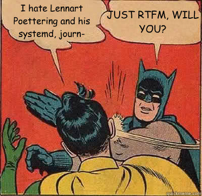

Linux
Administration et maintenance
Par Raphaël Berlamont / LibrIT
LibrIT ?
Fondée en 2011
Société de Service en Logiciel Libre
(SSLL? Oô)

Qu'est-ce qu'une SSLL ?
Société spécialisée dans de Logiciel Libre
Pléthorde (LINAGORA, Bluemind, Alcove, easter-eggs…)
Qu'est-ce qu'un logiciel libre ?
Un logiciel libre est un logiciel dont l'utilisation, l'étude, la modification et la duplication en vue de sa diffusion sont permises, techniquement et légalement.
(Dixit wikipedia)
Votre hôte
Administrateur sytème et réseau
Généraliste dans le Logiciel Libre
+ de 10 ans d'expériences
Dans de petites structures, des multinationnales, et des organismes publiques (ministères, armée…)
Linux ?
Au sens large
Un système d'exploitation
(on parle alors de distributions Linux)
Au sens précis
Un noyau
(ou kernel : il s'occupe de fournir aux logiciels une interface pour utiliser le matériel)
Linux ?
Histoire
Créé en 1991 par Linus Torvald
Origine ludique
1991 : ~10k lignes de code
2015 : ~16M lignes de code
Caractéristiques d'un Unix
(et donc de Linux)
Elles regroupent un noyau et des outils
Chaque distribution a ses caractéristiques
(outils, customisations…)
Les plus connues :
| Redhat | Fedora | Centos |
| Ubuntu | Debian | Knoppix |
| Gentoo | ArchLinux | LFS |
cf : distrowatch
La gestion des disques
MBR / GPT
késako ?
MBR
MBR : Master Boot Record
512 premiers octets du disque (1er secteur)
Contient la table des partitions
Contient le boot loader
Limite historique (CHS) à 2To
Max 4 partitions primaires
(dont une peut être "étendue" et contenir un nombre illimité de partition "logique")
GPT
GPT : GUUID Partition Table
Bien plus complexe que le MBR
Embarque un système de checksum
Utilise exclusivement LBA
Limite à + 9ZB (1ZB = 1021)
128 partitions possibles (de base)
MBR / GPT
Comparaison
| MBR | GPT |

©technet.microsoft.com |

©wikipedia |
Tout est fichier…
Premier disque : /dev/sda
8ième partition du troisième disque : /dev/sdc8
Anciens systèmes utilisant le driver IDE : /dev/hdXY
La gestion des disques
Les systèmes de fichiers
ext(2-3-4)
Systèmes de fichiers historique des distributions Linux
Attention : Nombre limité d'inodes
ext3
Journalisé
Redimensionnable à chaud
Taille max d'un fichier : 16GiB à 2TiB
Taille max d'une partition : 4TiB à 32TiB
obselète
ext4
Caractéristiques d'ext3
Taille max d'un fichier : 16TiB
Taille max d'une partition : 16TiB à 1EiB
Actuellement par défaut sur la majorité des distributions
Btrfs
Système de fichier futur de Linux
(actuel pour certaines distributions)
COW
Features en veux-tu en voilà
(defrag, loadblancing, RAID, dedup…)
En 2015, pas encore par défaut sur les distribs
Les autres…
- nfs : système de fichier réseau unix
- cifs : système de fichier réseau «Samba» (partage windows)
- iso9660 : système de fichier des galettes (CD/DVD/BR…)
- vfat : fat32 de M$
- ReiserFS, jfs, xfs, zfs : autres FS…
La gestion des disques
Les outils…
… pour le partitionnement
- fdisk : partitionnement MBR en mode interactif
- gdisk : partitionnement GPT en mode interactif
- gparted : partitionnement graphique
…pour les systèmes de fichiers
- df : Disk Free, montre l'espace disponible
- du : Disk Usage, montre l'espace utilisé par un fichier / répertoire
- resize2fs : redimensionne un système de fichier (pour ext2-3-4)
- fsck : vérifie le système de fichiers
- mkfs : créé le système de fichier (format)
- cryptsetup : chiffrement d'un système de fichiers
- mount : permet de «monter» une partition
La gestion des disques
mount ?
unix : the big difference
Contrairement à Windows, il n'y a pas de C: | D: | Z:…
Une racine (une partition)
Cette racine contient des répertoires
Ces répertoires peuvent pointer sur une partiton
Un schéma vaut tous les discours…

Comment garder tout ça au boot ?
/etc/fstab
| /dev/mapper/vm1-usr | /usr | ext3 | defaults | 0 | 2 |
| partition/disque | point de montage | format | option de montage | sauvegarde | réparation/test (man fstab) |
La gestion des disques
LVM
Dans les grandes lignes
Permet d'aggréger plusieurs volumes physiques (PV)
L'aggrégat de ces volumes physiques donne un groupe de volumes (VG)
Ces groupes de volumes peuvent être divisés en volumes logiques (LV)
Les LV apparaissent dans /dev/NOM_DU_VG/NOM_DU_LV
Un schéma vaut tous les discours…

©helios.de
Les outils pour gérer LVM
- pvcreate : initialise un volume physique en «PV» LVM
- vgcreate : créé un groupe de volumes (VG) avec un ou plusieurs PV
- lvcreate : créé un volume logique (LV) en piochant dans un VG
- vgresize : redimensionne un groupe de volume
- lvresize : redimensionne un volume logique
- vgdisplay : affiche les informations d'un groupe de volume (espace libre…)
- man lvm :)
La gestion des disques
Mise en pratique…
À vous de jouer :
(25 minutes)
- Ajouter 2 disques à votre VM (200Mo chacun minimum)
- Partitionner le disque en 2 volumes
- Formater la première partition en ext4
- Monter la dans /mnt/tp_linux
- Initialiser la seconde partition en tant que PV
- Créer un VG avec ce PV
- Créer à partir de ce VG 2 LV de 100Mo qui seront nommés «toto» et «titi»
- Formater ces deux nouveaux LV (en ext3 et xfs (ou autre))
- Les monter respectivement dans /mnt/tp_linux/toto_ext3 et /mnt/tp_linux/titi_xfs
- M'appeler pour me dire que c'est fait :)
Le démarrage
Vue d'ensemble

source http://commons.wikimedia.org
BIOS
Accronyme de Basic Input Output System
Ensemble de fonctions contenues dans une mémoire ROM
Permet d'interroger le hard (POST - Power On Self Test)
Charge le premier secteur du disque
Il est remplacé petit à petit par l'UEFI
Le BootLoader
Se situe dans le MBR :

En simple : permet de charger un executable
(dans notre cas, le noyeau Linux)
Les principaux BootLoader
Il en existe plusieurs :
- GRUB (GRant Unified Bootloader)
- LiLo (Linux Loader)
- IsoLinux (Boot sur CD)
- NTLDR (Windows jusqu'à XP)
- winload.exe (Windows à partir de Vista)
Le kernel (ou noyau)
Est chargé par le bootloader
Détecte et initialise le hardware
Monte la racine «/»
Permet de lancer le premier process «UserLand»
Le premier process
C'est l'unique process chargé directement par le noyau
Charge les deamons et outils de l'espace utilisateur
Configurable (qu'est-ce qu'on démarre?)
Les plus connus sont :
- init (System V)
- systemd
- upstart
- openrc
init
Origine Systeme V
Fichier de configuration /etc/inittab

systemd

systemd
Origine Fedora (Auteur Lennart Poettering)
Grosse usine à Gaz
Prend en charge l'ensemble du système de boot
Composé d'une 60aine de binaires
Temps de boot fortement réduit grâce à la //
Outils à connaitre :
- systemctl
- journalctl
Source de troll
Mise en application
Configurer le système pour lancer sshd au boot.
La gestion des logs

syslog
Daemon syslogd
Reçois les messages émis par le noyau et certains services
Permet de choisir la destination
Plusieurs critères : origine / sévérité
Fichier de configuration : /etc/syslog.conf
journal
Daemon journald
Peut remplacer syslog
Enregistre les logs dans un fichier indexé (~base de données)
Fichier de configuration : /etc/systemd/journald.conf
Fichier de log trop gros ? Logrotate !
Permet de faire de la rotation de log
Fortement paramétrable
Permet compresser
Attention à la durée légale de rétention
Généralement lancé par une tâche planifiée (cron)
Mise en application
Dans les logs, trouver les traces du démarrage du daemon sshd
Déclencher une rotation de log avec les archives ayant le format avec le timestamp unix
Les tâche planifiées

cron
Daemon crond
Fichier /etc/crontab
| 30 | 16 | * | * | * | root | echo "il est `date`" > /tmp/cron.exemple |
| minute | heure | jour du mois (0-31) | Mois (1-12) | Jour de la semaine | user executant la commande | Commande à exécuter |
Si utilisé sur un Desktop éteint la nuit : anacron
Mise en application
Lancer une tache toute les 2 minutes qui écrira la date dans un fichier temporaire
THE END
licence : CC BY-SA 3.0